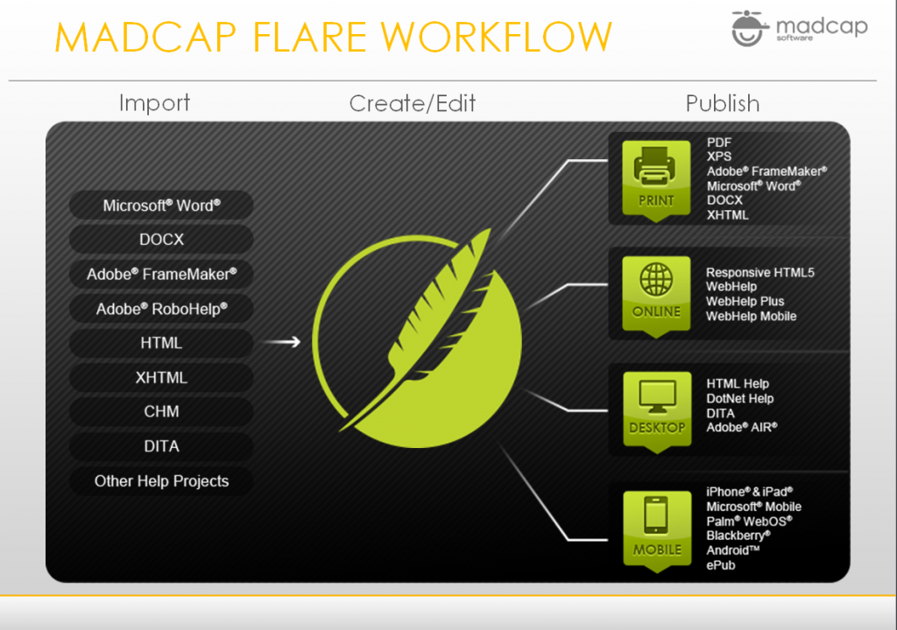
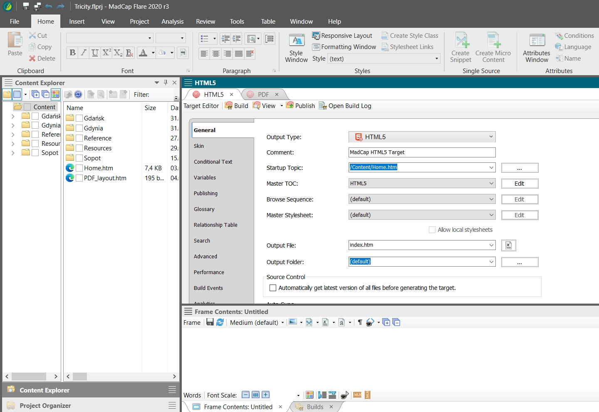
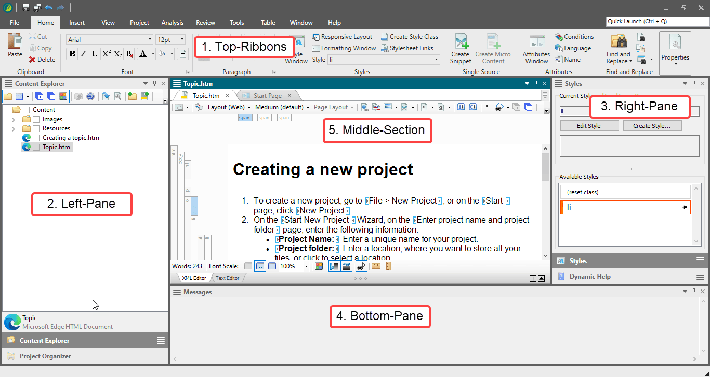

MadCap Flare
MadCap Flare — a native XML content authoring application, which offers single-source authoring in an environment that does not require to know any coding.
Workflow
From a single Flare project you can produce output in many different formats, including documentation for the web, desktop, print, and mobile.
Process
When you break down the authoring process in Flare, you will discover that it can be quite simple. Following are the basic steps that you need to follow for creating and developing a project in Flare.
- Start Projects Create a project from scratch, or start a project by importing existing content from a variety of sources.
- Add Content and Features Add content and features, such as topics, text, a table of contents, cross-references, navigation, page layouts, and all of the other elements necessary to help your end users.
- Design Through the use of features such as stylesheets, skins, page layouts, master pages, and more, you can design a look and feel for your output.
- Develop Targets Decide the type(s) of output formats that you want to generate and develop targets accordingly to meet your needs.
- Build and Distribute Output Generate output from a target, then make the files accessible to your end users. 
Interface
Flare uses a modern Multiple Document Interface (MDI) that provides you with many options to work in the way that you want.
It has the following main sections:
- Top–Ribbons: This section contains all the features and menus.
- Left–Pane: This section contains many explorers to access all the MadCap
files. You will find all your content files in this section. This section has
the following tabs:
- Content Explorer: In general you will find all your styles and content related files in this tab; for example, topics, stylesheets, master pages, etc.
- Project Explorer: You will find all your output related files in this tab; for example, target files, table of contents, condition tags, variables, etc.
- Right–Pane: This pane has the following tabs:
- Find and Replace
- Styles
- Dynamic help
- Bottom–Pane: You will see your build progress window and messages window in this pane.
- Middle-section: You can see many of the Flare files editors in this section; such as XML editor, TOC editor, Stylesheet editor. When you start the MadCap Flare application, you will find a start page appearing in this window, which you can use to perform some high-level tasks and access information.